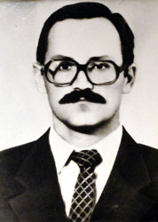
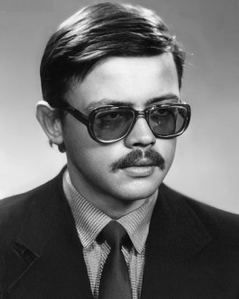

Aleksandr Akimov
- Born:6 may 1953 (Novosibirsk RFSR, USSR)
- Death:10 may 1986 (Moscow, RFSR, USSR)
- Cause of DeathAcute radiation syndome(ARS)
See biography
Image: CC BY / ДСП "Чорнобильська АЕС"

Leonid Toptunov
- Born:16 agust 1960 (Mykolayivka Sumy Oblast, Ukranian SSR, USSR)
- Death:14 may 1986 (Moscow, RFSR, USSR)
- Cause of DeathAcute radiation syndome(ARS)
See biography

Valery Khodemchuk
- Born:6 may 1953 (Kropyvnia, Ukranian SSR, USSR)
- Death:26 april 1986 (Chernobyl NPP, Ukranian SSR, USSR)
- Cause of DeathUnknown, probably explosion trauma
See biography